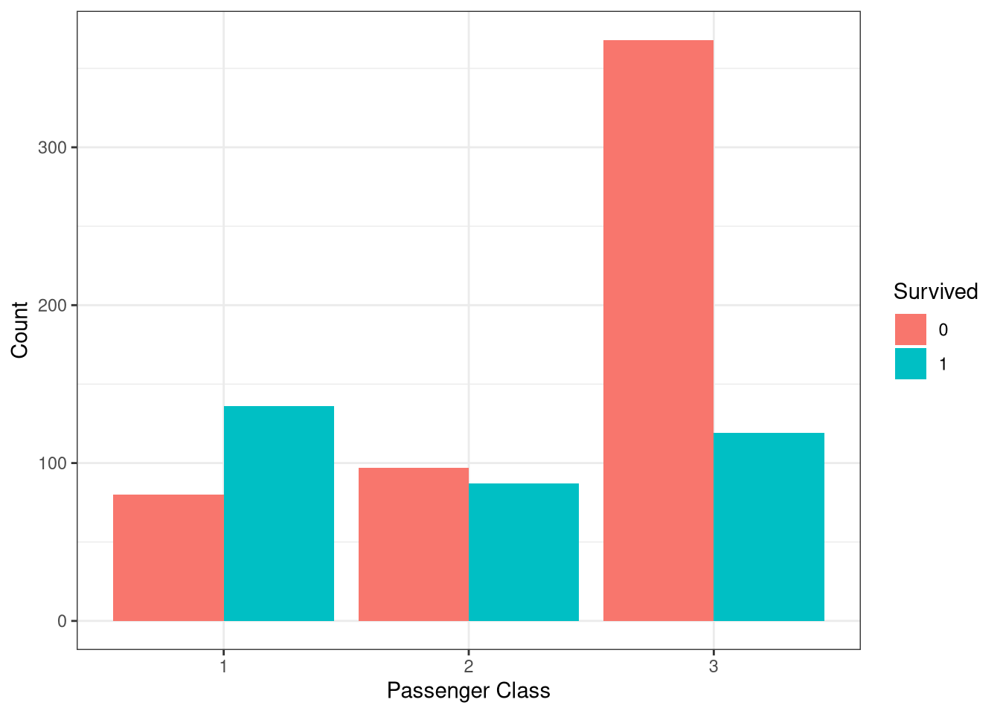
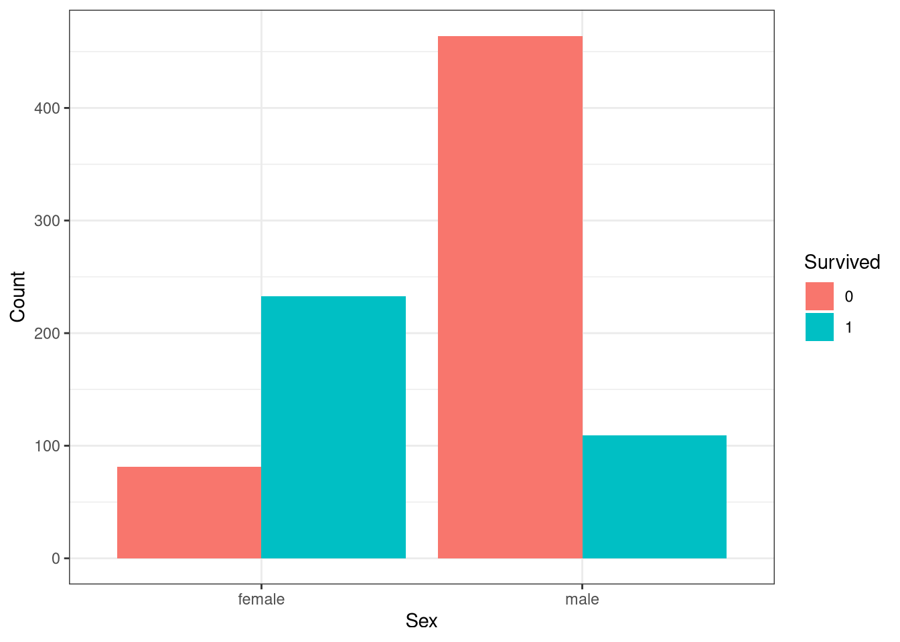
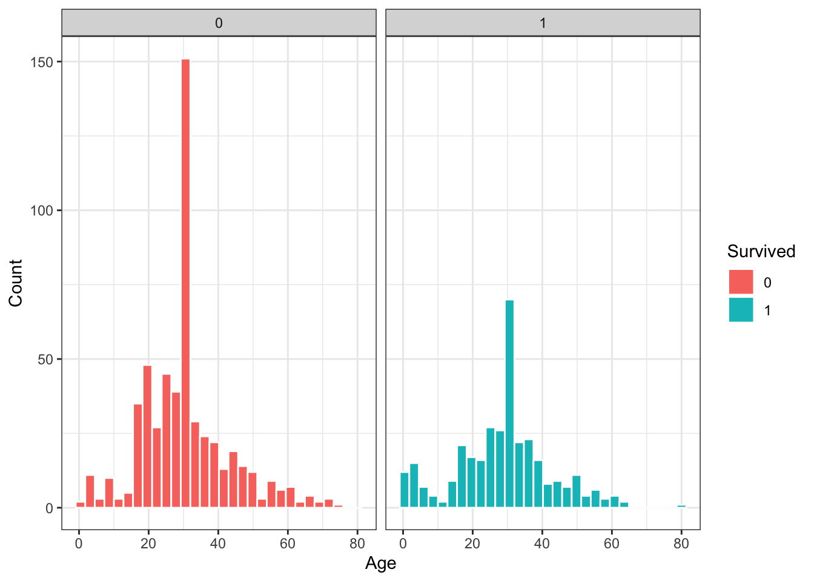
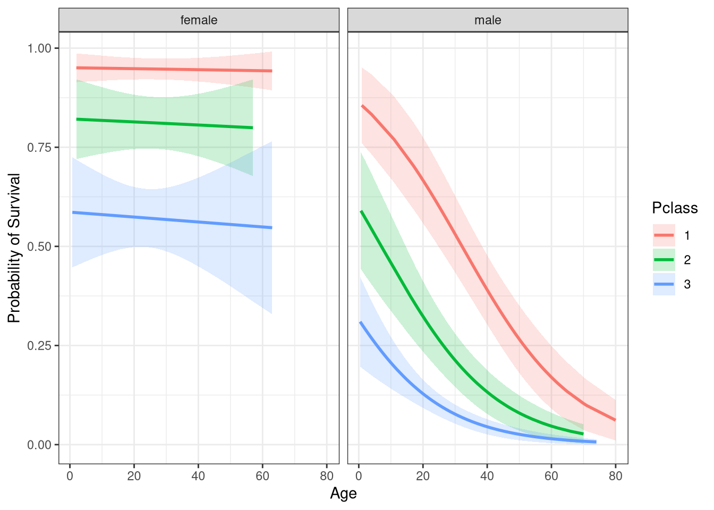

library(dplyr)
library(magrittr)
library(ggplot2)
library(foreign)
library(kableExtra)
library(janitor)
library(readr)Lab 5
We will use the following packages in this practical:
In this practical, you will perform regression analyses using glm() and inspect variables by plotting these variables, using ggplot().
Part 1: Logistic regression
Logistic regression is a supervised learning algorithm that classifies data into categories, by predicting the probability that an observation falls into a particular category based on its features. In this tutorial we will consider binary classification, where we determine which of two categories a data point belongs to.
The logistic function can be described as:
\[ P(y = 1|X) = sigmoid(z) = \frac{1}{1+e^{-z}} \] where
\[ z = \hat{\beta_0} + \hat{\beta_1}x_1 + \hat{\beta_2}x_2 + ... + \hat{\beta_k}x_k \] \(z\) is like the linear predictor in linear regression, but it is transformed by the sigmoid function so that results can be interpreted as probabilities (between 0 and 1). The probability is compared to a threshold to determine what class \(y\) belongs to based on \(X\). You can choose what this threshold is and it is context dependent. For example, if you are predicting the chances of recovery in a clinical trial you might set a very high threshold of 0.90. A common threshold for low-stakes research is 0.50.
The glm() function is used to specify several different models, among which the logistic regression model. The logistic regression model can be specified by setting the family argument to “binomial”. You can save a model in an object and request summary statistics with the summary() command.
For logistic regression, it important to know and check what category the predicted probabilities refer to, so you can interpret the model and it’s coefficients correctly. If your outcome variable is coded as a factor, the glm() function predicts the 2nd category, which is by default the alphabetical latter one. For example, if the categories are coded as 0 and 1, the probability of belonging to “1” is predicted by the model.
When a model is stored in an object you can ask for the coefficients (model$coeffients), the predicted probabilities of belonging to the ‘higher’ category category (model$fitted.values), and the aic (model$aic). To investigate all additional model information that is stored in the object, check out the list of the model by selecting it in the environment-list.
Working with odds and log-odds
Before we get started with logistic modelling it helps to understand how odds, log-odds, and probability are related. Essentially, they are all just different expressions of the same thing and converting between them involve simple formulas.
Coefficients calculated using the glm() function returns log-odds by default. Most of us find it difficult to think in terms of log-odds, so instead we convert them to odds (or odds-ratios) using the exp() function. If we want to go from odds to log-odds, we just take the logarithm using log().
An odds-ratio is the probability of success and is defined as \(Odds = \frac{P}{1-P}\), where \(P\) is the probability of an event happening and \(1-P\) is the probability that it does not happen. For example, if we have an 80% chance of a sunny day, then we have a 20% chance of a rainy day. The odds would then equal \(\frac{.80}{.20} = 4\), meaning the odds of a sunny day are 4 to 1. Let’s consider this further with an example.
The code below creates a data frame called data with a column called conc showing the number of trials wherein different concentrations of the peptide-C protein inhibited the flow of current across a membrane. The yes column contains counts of trials where this occured.
data <- data.frame(conc = c(0.1, 0.5, 1, 10, 20, 30, 50, 70, 80, 100, 150),
no = c(7, 1, 10, 9, 2, 9, 13, 1, 1, 4, 3),
yes = c(0, 0, 3, 4, 0, 6, 7, 0, 0, 1 ,7)
)
data conc no yes
1 0.1 7 0
2 0.5 1 0
3 1.0 10 3
4 10.0 9 4
5 20.0 2 0
6 30.0 9 6
7 50.0 13 7
8 70.0 1 0
9 80.0 1 0
10 100.0 4 1
11 150.0 3 7- Add the following variables to the dataset:
- the total number of trials for each observation (i.e., the sum of the
noandyestrials for each row) - the proportion of yes trials in each row (i.e. yes divided by the total)
- the log-odds of inhibition for each row (i.e. the log-odds of
yesvsno)
data <-
data %>%
mutate(total = no + yes,
prop = yes / total,
logit = qlogis(prop)
)
# The `qlogis()` function is equivalent to the log-odds (i.e, logit) function.- Inspect the new columns. Do you notice anything unusual?
head(data) conc no yes total prop logit
1 0.1 7 0 7 0.0000000 -Inf
2 0.5 1 0 1 0.0000000 -Inf
3 1.0 10 3 13 0.2307692 -1.2039728
4 10.0 9 4 13 0.3076923 -0.8109302
5 20.0 2 0 2 0.0000000 -Inf
6 30.0 9 6 15 0.4000000 -0.4054651#There are many zero proportions which produce logit values of infinity. We can work around this issue by adding a constant (usually 0.5) to all cells before calculating the log-odds. We add the same value to the numerator and denominator of our odds formula, so we don't change the relative interpretations of the odds. We could also add a 1 to each cell. This option is conceptually interesting because the log of 1 equals 0. It's almost like we're adding zero to the odds and still correcting the issue.- Add a new column to your dataset containing the corrected odds.
You can compute the value of this column using the following formulation of the log-odds:
\[ log(odds) = log(\frac{yes + 0.5} {no + 0.5}) \]
robustLogit <- function(x, y) log((x + 0.5) / (y + 0.5))
data <- data %>%
mutate(logit2 = robustLogit(yes, no))
data conc no yes total prop logit logit2
1 0.1 7 0 7 0.0000000 -Inf -2.7080502
2 0.5 1 0 1 0.0000000 -Inf -1.0986123
3 1.0 10 3 13 0.2307692 -1.2039728 -1.0986123
4 10.0 9 4 13 0.3076923 -0.8109302 -0.7472144
5 20.0 2 0 2 0.0000000 -Inf -1.6094379
6 30.0 9 6 15 0.4000000 -0.4054651 -0.3794896
7 50.0 13 7 20 0.3500000 -0.6190392 -0.5877867
8 70.0 1 0 1 0.0000000 -Inf -1.0986123
9 80.0 1 0 1 0.0000000 -Inf -1.0986123
10 100.0 4 1 5 0.2000000 -1.3862944 -1.0986123
11 150.0 3 7 10 0.7000000 0.8472979 0.7621401- Fit a logistic regression model where:
propis the outcomeconcis the only predictor- the number of total trials per row are used as weights (we need this because a different number of trials can go into defining each observation of
prop)
Interpret the slope estimate.
summary(glm(prop ~ conc,
family = binomial,
weights = total,
data = data))
Call:
glm(formula = prop ~ conc, family = binomial, data = data, weights = total)
Coefficients:
Estimate Std. Error z value Pr(>|z|)
(Intercept) -1.32701 0.33837 -3.922 8.79e-05 ***
conc 0.01215 0.00496 2.450 0.0143 *
---
Signif. codes: 0 '***' 0.001 '**' 0.01 '*' 0.05 '.' 0.1 ' ' 1
(Dispersion parameter for binomial family taken to be 1)
Null deviance: 16.683 on 10 degrees of freedom
Residual deviance: 10.389 on 9 degrees of freedom
AIC: 30.988
Number of Fisher Scoring iterations: 4# A unit increase in conc increases the log-odds of inhibition by 0.0121 units, and this increase is statistically significant.
# If we exponentiate the slope estimate, we can get an interpretation in odds units, but the effect becomes multiplicative instead of additive. So for every unit increase in conc, the odds of inhibition are 1.01215 times higher. Note then that odds above 1 indicate inhibition is x-times higher, while odds below 1 indicate inhibition is x-times less.Titanic data
You will work with the titanic data set which you can find in the surfdrive folder, containing information on the fate of passengers on the infamous voyage.
Survived: this is the outcome variable that you are trying to predict, with 1 meaning a passenger survived and 0 meaning they did notPclass: this is the ticket class the passenger was travelling on, with 1, 2, and 3 representing 1st, 2nd and 3rd class respectivelyAge: this is the age of the passenger in yearsSex: this is the sex of the passenger, either male or female
- Read in the data from the “titanic.csv” file, selecting only the variables
Survived,Pclass,SexandAge. If necessary, correct the class of the variables.
titanic <- read_csv("titanic.csv") %>%
mutate(Survived = as.factor(Survived),
Sex = as.factor(Sex),
Pclass = as.factor(Pclass))Rows: 891 Columns: 4
── Column specification ────────────────────────────────────────────────────────
Delimiter: ","
chr (1): Sex
dbl (3): Survived, Pclass, Age
ℹ Use `spec()` to retrieve the full column specification for this data.
ℹ Specify the column types or set `show_col_types = FALSE` to quiet this message.- What relationships do you expect to find between the predictor variables and the outcome?
# We could say that:
# class is related to the outcome as passengers travelling on a higher class ticket have a higher probability of survival
# sex is related to the outcome as women have a higher probability of survival
# age is related to the outcome as younger passengers have a higher probability of survival- Investigate how many passengers survived in each class. You can do this visually by creating a bar plot, or by using the
table()function. Search??tablefor more information.
titanic %>%
ggplot(aes(Pclass, fill = Survived)) +
geom_bar(position = "dodge") +
labs(x = "Passenger Class",
y = "Count") +
theme_bw()
# The bar plot clearly shows that people in lower class were less likely to survive.
# We can also use the `prop.table()` function to investigate this. The argument `margin = 1` turns the counts to marginal proportions.
titanic %$%
table(Pclass, Survived) %>%
prop.table(margin = 1) %>%
round(2) Survived
Pclass 0 1
1 0.37 0.63
2 0.53 0.47
3 0.76 0.24- Similarly, investigate the relationship between survival and sex by creating a bar plot and a table.
titanic %$%
table(Sex, Survived) %>%
prop.table(margin = 1) %>%
round(2) Survived
Sex 0 1
female 0.26 0.74
male 0.81 0.19# The table shows the proportion of males and females that survived versus those who did not survive. Females are much more likely to have survived than males.
titanic %>%
ggplot(aes(Sex, fill = Survived)) +
geom_bar(position = "dodge") +
labs(x = "Sex",
y = "Count") +
theme_bw()
- Investigate the relationship between age and survival by creating a histogram of the age of survivors versus non-survivors.
titanic %>%
ggplot(aes(Age, fill = Survived)) +
geom_histogram(colour = "white") +
labs(x = "Age",
y = "Count") +
facet_wrap(~Survived) +
theme_bw()`stat_bin()` using `bins = 30`. Pick better value `binwidth`.
# The distribution of age is different for survivors and non-survivors. Younger passengers have higher chances of survival compared to older passengers.No predictors
- Specify a logistic regression model where “Survived” is the outcome and there are no predictors.
glm(Survived ~ 1,
family = binomial,
data = titanic) %>%
summary()
Call:
glm(formula = Survived ~ 1, family = binomial, data = titanic)
Coefficients:
Estimate Std. Error z value Pr(>|z|)
(Intercept) -0.47329 0.06889 -6.87 6.4e-12 ***
---
Signif. codes: 0 '***' 0.001 '**' 0.01 '*' 0.05 '.' 0.1 ' ' 1
(Dispersion parameter for binomial family taken to be 1)
Null deviance: 1186.7 on 890 degrees of freedom
Residual deviance: 1186.7 on 890 degrees of freedom
AIC: 1188.7
Number of Fisher Scoring iterations: 4# A logistic regression without any predictors is simply modelling the log-odds of survival for the entire population (the intercept, beta0).
# The log-odds are -0.473, and the odds are $exp(-0.473) = 0.623$.
# We can also get the odds from a frequency table: the probability of survival is $342/549 = 0.623$. The log-odds equals exp(beta0) = -0.473.
titanic %>%
count(Survived) %>%
mutate(prop = prop.table(n)) %>%
kbl(digits = 2) %>%
kable_paper(bootstrap_options = "striped", full_width = FALSE)| Survived | n | prop |
|---|---|---|
| 0 | 549 | 0.62 |
| 1 | 342 | 0.38 |
Binary predictor
- Specify a logistic regression model where “Survived” is the outcome and “Sex” is the only predictor.
glm(Survived ~ Sex,
family = binomial,
data = titanic) %>%
summary()
Call:
glm(formula = Survived ~ Sex, family = binomial, data = titanic)
Coefficients:
Estimate Std. Error z value Pr(>|z|)
(Intercept) 1.0566 0.1290 8.191 2.58e-16 ***
Sexmale -2.5137 0.1672 -15.036 < 2e-16 ***
---
Signif. codes: 0 '***' 0.001 '**' 0.01 '*' 0.05 '.' 0.1 ' ' 1
(Dispersion parameter for binomial family taken to be 1)
Null deviance: 1186.7 on 890 degrees of freedom
Residual deviance: 917.8 on 889 degrees of freedom
AIC: 921.8
Number of Fisher Scoring iterations: 4- What does the intercept mean? What are the odds and what are the log-odds of survival for males?
# In the model with one dichotomous predictor we are modelling logit(p) = beta0 + beta1*male.
# The intercept is the log-odds of survival for women (1.0566), since the reference group is female.
# The log-odds of survival for men is -2.5137 lower than for women. The odds of survival for men is 0.081, or 92% lower than females.Categorical predictor (more than 2 categories)
- Specify a logistic regression model where “Survived” is the outcome and “Pclass” is the only predictor.
glm(Survived ~ Pclass,
family = binomial,
data = titanic) %>%
summary()
Call:
glm(formula = Survived ~ Pclass, family = binomial, data = titanic)
Coefficients:
Estimate Std. Error z value Pr(>|z|)
(Intercept) 0.5306 0.1409 3.766 0.000166 ***
Pclass2 -0.6394 0.2041 -3.133 0.001731 **
Pclass3 -1.6704 0.1759 -9.496 < 2e-16 ***
---
Signif. codes: 0 '***' 0.001 '**' 0.01 '*' 0.05 '.' 0.1 ' ' 1
(Dispersion parameter for binomial family taken to be 1)
Null deviance: 1186.7 on 890 degrees of freedom
Residual deviance: 1083.1 on 888 degrees of freedom
AIC: 1089.1
Number of Fisher Scoring iterations: 4- Which category is the reference group? What are their odds of survival?
# The reference group are 1st class passengers, represented by the intercept.
# The log-odds of survival for 1st class passengers is 0.5306.
# The odds are 1.70, meaning 1st class passengers are 70% more likely to survive.- What are the chances of survival for 2nd and 3rd class passengers?
# For 2nd class passengers, the log-odds of survival is -0.6394.
# The odds are 0.527, meaning 2nd class passengers are 47% less likely to survive than 1st class passengers.
# For 3rd class passengers, the log-odds of survival is -1.646.
# The odds are 0.188, meaning 3nd class passengers are 81% less likely to survive than 1st class passengers.Continuous predictor
- Specify a logistic regression model where “Survived” is the outcome and “Age” is the only predictor.
Save this model as you will come back to it later.
fit1 <- glm(Survived ~ Age,
family = binomial,
data = titanic)
summary(fit1)
Call:
glm(formula = Survived ~ Age, family = binomial, data = titanic)
Coefficients:
Estimate Std. Error z value Pr(>|z|)
(Intercept) -0.14327 0.17209 -0.832 0.4051
Age -0.01120 0.00539 -2.077 0.0378 *
---
Signif. codes: 0 '***' 0.001 '**' 0.01 '*' 0.05 '.' 0.1 ' ' 1
(Dispersion parameter for binomial family taken to be 1)
Null deviance: 1186.7 on 890 degrees of freedom
Residual deviance: 1182.3 on 889 degrees of freedom
AIC: 1186.3
Number of Fisher Scoring iterations: 4- What does the intercept mean when there is a continuous predictor?
# In the case of a continuous predictor there is no real reference group. Instead, the intercept is the log-odds of survival when age = 0. In this model, the log-odds of survival for passengers of age 0 is -0.143, corresponding with the odds of survival at 0.867 (= exp(log odds)).- How are the odds and log-odds interpreted for a continuous predictor?
# For continuous predictors, the log-odds either increase or decrease with every unit increase in the continuous predictor. So, in our model:
# For every increase in age of one year, the log-odds of survival decrease by -0.011, meaning that as age increases the chances of survival decrease.
# For every increase in age of one year, the odds of survival are 0.99 (= exp(-0.0112)) times the odds of those with one age unit less, or -1.09%.Multinomial model with an interaction term
- Specify a logistic regression model
Survivedis the outcome andPclassplus an interaction betweenSexandAgeas the predictor.
Save this model as we will return to it later.
fit2 <- glm(Survived ~ Pclass + Sex*Age, family = binomial, data = titanic)
summary(fit2)
Call:
glm(formula = Survived ~ Pclass + Sex * Age, family = binomial,
data = titanic)
Coefficients:
Estimate Std. Error z value Pr(>|z|)
(Intercept) 2.834344 0.414982 6.830 8.49e-12 ***
Pclass2 -1.264399 0.273220 -4.628 3.70e-06 ***
Pclass3 -2.412614 0.250004 -9.650 < 2e-16 ***
Sexmale -1.262875 0.433364 -2.914 0.003567 **
Age -0.004202 0.011426 -0.368 0.713083
Sexmale:Age -0.048460 0.014576 -3.325 0.000885 ***
---
Signif. codes: 0 '***' 0.001 '**' 0.01 '*' 0.05 '.' 0.1 ' ' 1
(Dispersion parameter for binomial family taken to be 1)
Null deviance: 1186.66 on 890 degrees of freedom
Residual deviance: 793.82 on 885 degrees of freedom
AIC: 805.82
Number of Fisher Scoring iterations: 5- How is the significant interaction term interpreted in this model?
# The interaction between age and sex is significant, suggesting the slopes for age on survival are different for males and females.Part 2: Model fit
Model selection is an important step and there are several metrics for assessing model fit to help us select the best performing model. We will use deviance and information criterion to compare the fit of two models you saved before: fit1 and fit2.
Deviance
Deviance is measure of the goodness-of-fit in a GLM where lower deviance indicates a better fitting model. R reports two types of deviance:
- null deviance: how well the outcome is predicted by the intercept-only model
- residual deviance: how well the outcome is predicted by the model with the predictors added
- Get the model summaries and indicate what the null and residual deviance are.
# You can use the `summary()` command to get the deviance statistics for each model. The null and residual deviance are below the model coefficients.
summary(fit1)
Call:
glm(formula = Survived ~ Age, family = binomial, data = titanic)
Coefficients:
Estimate Std. Error z value Pr(>|z|)
(Intercept) -0.14327 0.17209 -0.832 0.4051
Age -0.01120 0.00539 -2.077 0.0378 *
---
Signif. codes: 0 '***' 0.001 '**' 0.01 '*' 0.05 '.' 0.1 ' ' 1
(Dispersion parameter for binomial family taken to be 1)
Null deviance: 1186.7 on 890 degrees of freedom
Residual deviance: 1182.3 on 889 degrees of freedom
AIC: 1186.3
Number of Fisher Scoring iterations: 4summary(fit2)
Call:
glm(formula = Survived ~ Pclass + Sex * Age, family = binomial,
data = titanic)
Coefficients:
Estimate Std. Error z value Pr(>|z|)
(Intercept) 2.834344 0.414982 6.830 8.49e-12 ***
Pclass2 -1.264399 0.273220 -4.628 3.70e-06 ***
Pclass3 -2.412614 0.250004 -9.650 < 2e-16 ***
Sexmale -1.262875 0.433364 -2.914 0.003567 **
Age -0.004202 0.011426 -0.368 0.713083
Sexmale:Age -0.048460 0.014576 -3.325 0.000885 ***
---
Signif. codes: 0 '***' 0.001 '**' 0.01 '*' 0.05 '.' 0.1 ' ' 1
(Dispersion parameter for binomial family taken to be 1)
Null deviance: 1186.66 on 890 degrees of freedom
Residual deviance: 793.82 on 885 degrees of freedom
AIC: 805.82
Number of Fisher Scoring iterations: 5# For model 1, the null deviance is 1186.7 and the residual deviance is 1182.3 For model 2, the null deviance is 1186.66 and the residual deviance is 793.82We can use the anova() function to perform an analysis of deviance that compares the difference in deviances between competing models.
- Compare the fit of model 1 with the fit of model 2 using
anova() andtest = “Chisq”`.
anova(fit1, fit2, test = "Chisq")Analysis of Deviance Table
Model 1: Survived ~ Age
Model 2: Survived ~ Pclass + Sex * Age
Resid. Df Resid. Dev Df Deviance Pr(>Chi)
1 889 1182.28
2 885 793.82 4 388.45 < 2.2e-16 ***
---
Signif. codes: 0 '***' 0.001 '**' 0.01 '*' 0.05 '.' 0.1 ' ' 1# The analysis of deviance indicates that there is a reduction in residual deviance of 388.46 that is statistically significant. Model 2 is a better model. For a binomial model, the statistical test should be the chi-square difference test.Information criteria
AIC is the Akaike’s Information Criterion, a method for assessing model quality through comparison of related models. AIC is based on the deviance but introduces a penalty for more complex models. The number itself is not meaninful, and it is only useful when comparing models against one another. Like deviance, the model with the lowest AIC is best.
- Use the
AIC()function to get the AIC value for model 1 and model 2.
AIC(fit1, fit2) df AIC
fit1 2 1186.2782
fit2 6 805.8245# The AIC for model 2 is lower than the AIC for model 1, indicating that model 2 has a better fitBIC is the Bayesian Information Criterion and is very similar to AIC, but penalises a complex model more than the AIC would. Complex models will have a larger score indicating worse fit. One difference to the AIC is that the probability of selecting the correct model with the BIC increases as the sample size of the training set increases.
- Use the
BIC()function to get the BIC value for model 1 and model 2. ::: {.cell}
BIC(fit1, fit2) df BIC
fit1 2 1195.8629
fit2 6 834.5785# The BIC for model 2 is lower than the BIC for model 1, indicating that model 2 has a better fit:::
- Which model should we proceed with?
# Model 2, as it has lower residual deviance, AIC and BIC.Part 3: Predicted probabilites
Often with logistic regression we are interested in how well our model can predict the outcome. The predict() function allows us to do this, taking the model and some data as its main arguments. Additionally, you can specify whether you want predict() to give you predictions as logit or probabilities.
Proceed using the model you selected in the previous question.
- Use the
predict()function to generate predicted probabilities for the multivariate logistic model.predict()takes the following arguments:
object, i.e. the logistic modelnewdata, i.e. a data set where we want to predict the outcome (we will usetitanic)type, i.e. can be"logit"for log-odds or"response"for probabilities (we will usetype = "response")se.fit, i.e. set toTRUEto estimate the standard error of the probabilities
Remember to save the output to an object. ::: {.cell}
preds <- data.frame(predict(fit2, type = "response", se.fit = TRUE))
# The `type="response"` option tells R to output probabilities of the form P(Y = 1|X), as opposed to other information such as the logit.:::
- Add the predicted probabilities and standard errors to the data set.
titanic$probs <- preds$fit
titanic$se <- preds$se.fit
# You can access the predicted probabilities using `$fit` and the standard errors as `$se.fit`.- Calculate the confidence intervals for the predicted probabilities and add them to the data.
titanic %<>%
mutate(ci_Lower = probs - 1.96 * se,
ci_Upper = probs + 1.96 * se)
# Now we have all the information to visualize our predicted probabilities using `ggplot()`:
# Note: `geom_ribbon()` allows us to display an interval for the `y` values using `ymin` and `ymax`.*
titanic %>%
ggplot(aes(x = Age, y = probs)) +
geom_ribbon(aes(ymin = ci_Lower, ymax = ci_Upper, fill = Pclass), alpha = 0.2) +
geom_line(aes(color = Pclass), lwd = 1) +
ylab("Probability of Survival") +
theme_bw() +
facet_wrap(vars(Sex))